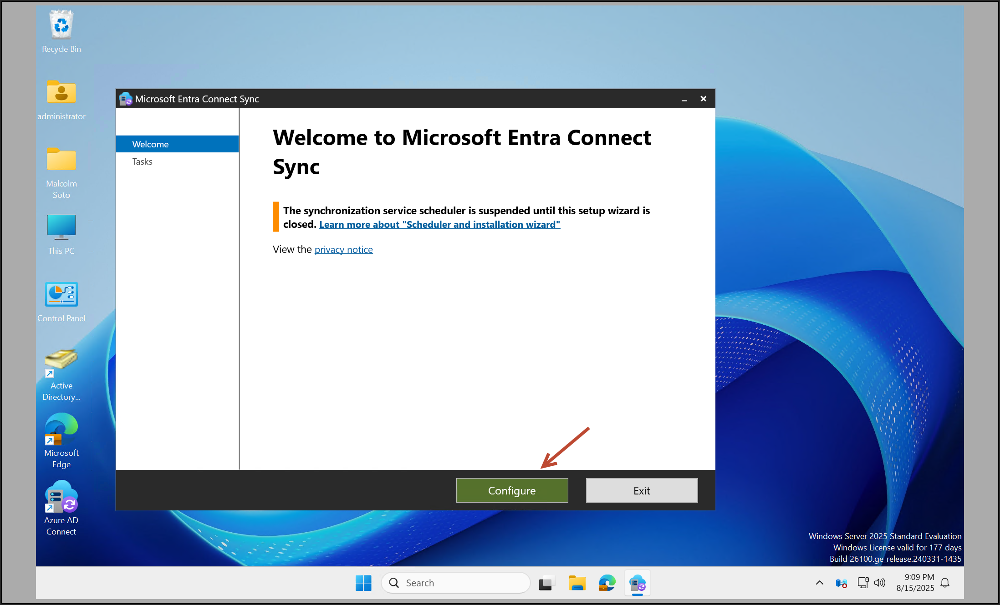
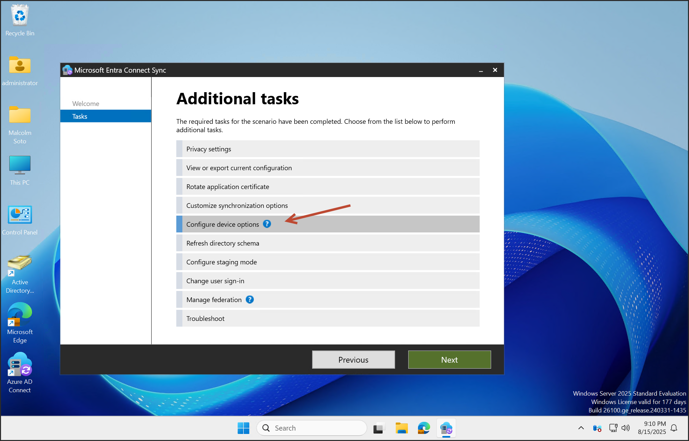
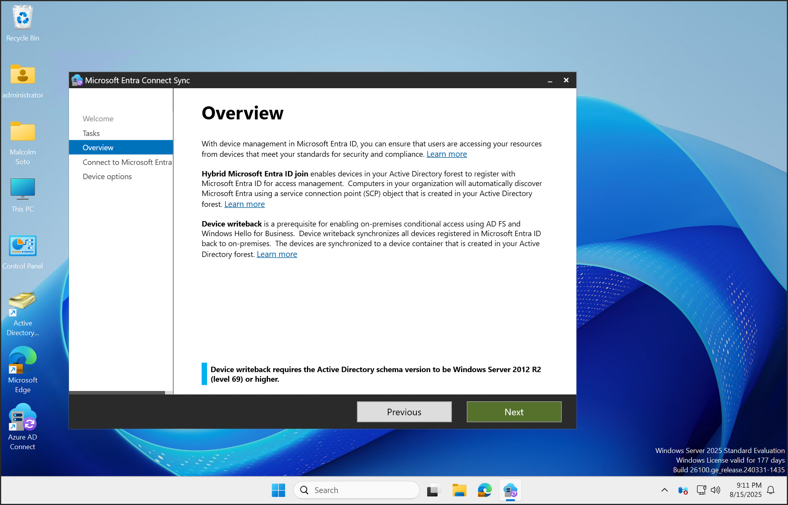
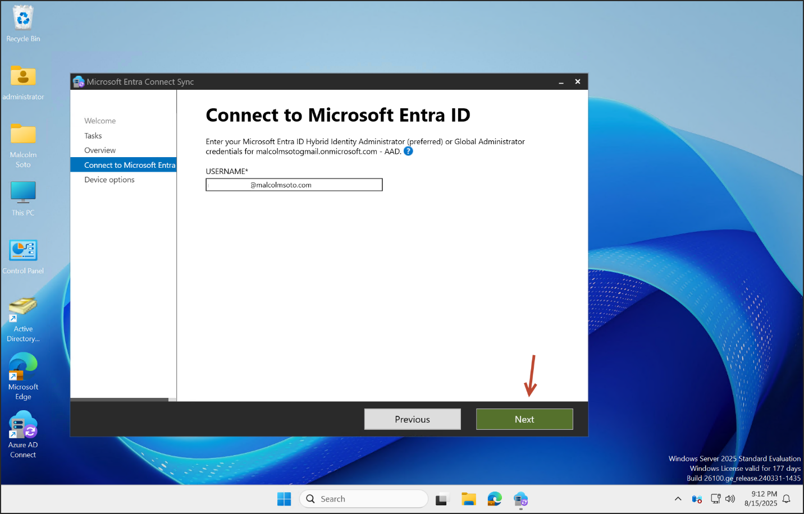
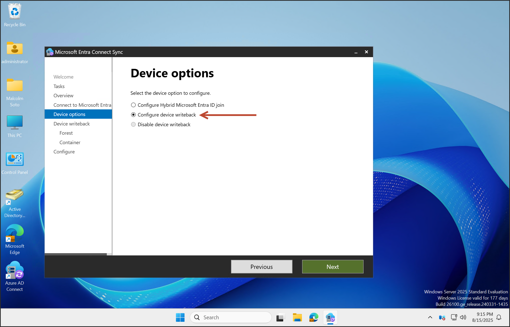
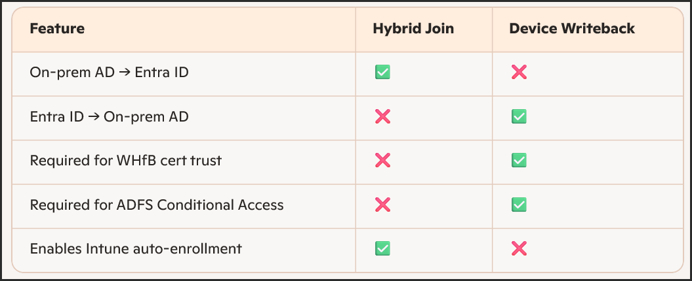
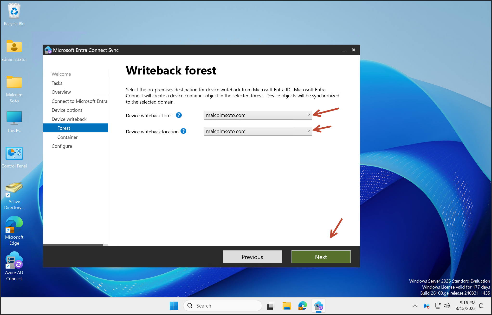
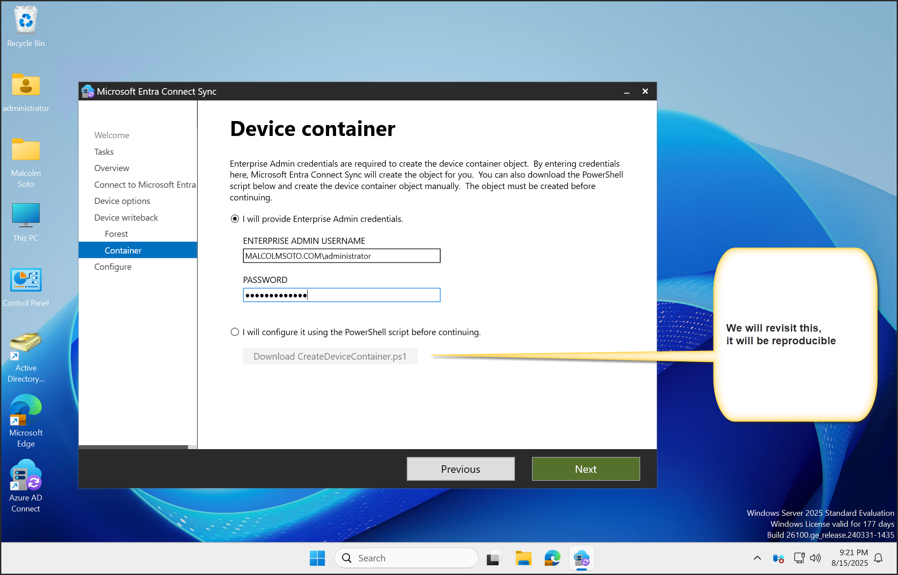

The point of device writeback is to bridge the gap between cloud-registered devices and on-premises Active Directory,
enabling legacy systems and hybrid identity features to recognize and interact with those devices.
Device writeback allows Azure AD-registered devices (like those joined via Autopilot or Intune) to be written back
into your on-premises Active Directory. This is useful for:
Windows Hello for Business (hybrid certificate trust)
Conditional Access via ADFS
Legacy apps that require on-prem AD computer objects
Prerequisites
You must be using Microsoft Entra ID P1 or P2
Devices must be in the same forest as the users
Only one device registration configuration object is supported per forest
Azure AD Connect version 1.1.819.0 or newer is required
How to Enable Device Writeback
Launch Azure AD Connect

Select “Configure device options”



Enable Device Writeback

Configure Hybrid Microsoft Entra ID Join

Configure Hybrid Microsoft Entra ID Join
This option enables hybrid join, meaning:
Devices joined to on-prem AD are automatically registered in Microsoft Entra ID (Azure AD)
Enables SSO, Conditional Access, and Intune enrollment for domain-joined machines
Required for group policy-based Autopilot deployments or co-management scenarios
Use this when:
You want on-prem AD devices to be visible in Entra ID
You’re managing devices with GPOs or SCCM
You’re enabling Intune auto-enrollment for domain-joined endpoints
Configure Device Writeback
This does the reverse:
Devices that are registered in Entra ID (like Autopilot or Intune-managed devices) get written back to on-prem AD
Creates a device object in AD under a specified OU
Required for:
Windows Hello for Business (certificate trust)
ADFS Conditional Access
Legacy apps that need AD device objects
Use this when:
You need cloud-joined devices to be recognized by on-prem AD
You’re deploying Windows Hello for Business hybrid cert trust
You’re using ADFS for Conditional Access
Configure Device Writeback

Cloud-joined devices are written back to on-prem AD
Creates device object in AD under a specified OU
Required for WHfB (cert trust), ADFS, legacy apps
Prepare Active Directory

Provide Enterprise Admin credentials to auto-configure